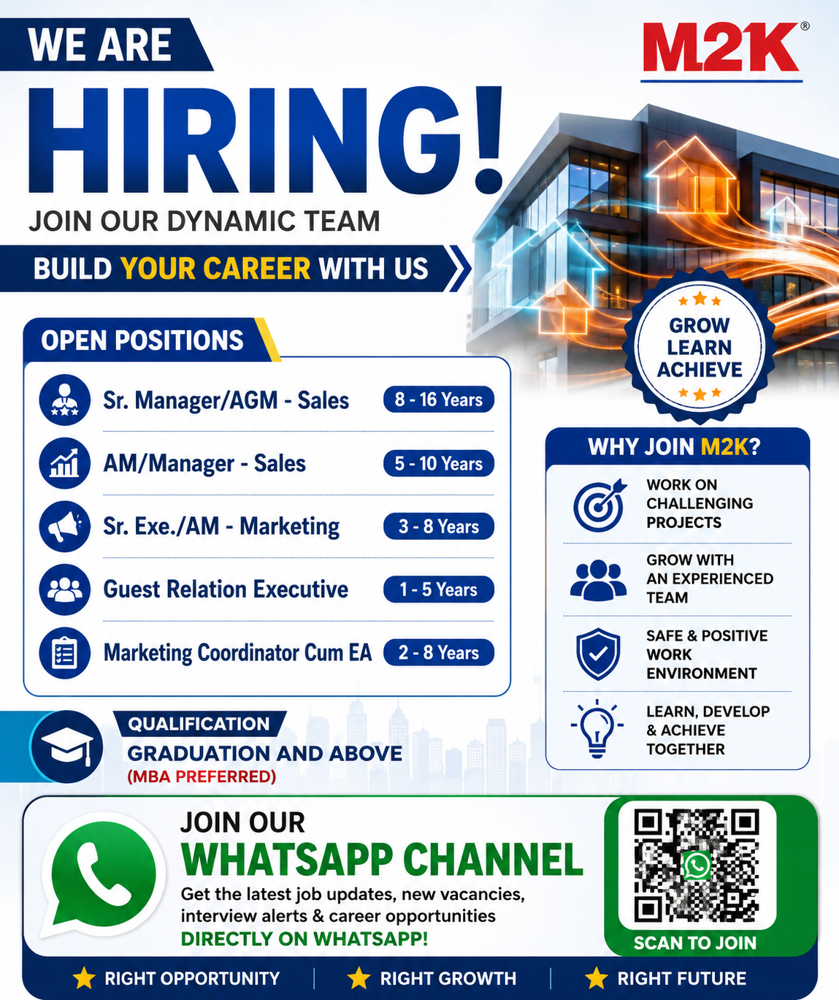

M2K is inviting applications from qualified and experienced professionals for multiple positions in Sales, Marketing and Guest Relations. This recruitment opportunity is suitable for candidates looking to build or advance their careers in the real estate, marketing, sales and customer relationship sectors.
According to the recruitment information shown in the supplied job poster, the company is looking for candidates across different levels of experience. The available positions range from experienced management roles to executive-level opportunities. Candidates with graduation and above qualifications can consider applying for the positions that match their experience and professional background.
Company: M2K
Industry: Sales, Marketing & Real Estate
Qualification: Graduation and Above
Preferred Qualification: MBA Preferred
Recruitment Type: Experienced Professional Hiring
Available Departments: Sales, Marketing and Guest Relations
M2K has announced several career opportunities for professionals having experience in sales, marketing and customer relationship functions. The recruitment is suitable for candidates who have experience in handling business development activities, sales operations, marketing campaigns, customer communication, relationship management and administrative coordination.
The vacancies cover different levels of responsibility. Senior management positions require considerable industry experience, while executive positions are available for candidates with comparatively lower experience. This makes the recruitment relevant for professionals at different stages of their careers.
Candidates should carefully compare their current experience with the experience requirement mentioned for each position before submitting their application. Applying for a position that closely matches the candidate's experience can improve the chances of the CV being considered during the initial screening process.
Experience Required: 8–16 Years
This position is intended for experienced sales professionals who have strong knowledge of sales management, business development, customer handling and team leadership. Candidates applying for a senior management role should preferably have experience managing sales teams, achieving business targets and developing sales strategies.
Experience Required: 5–10 Years
The AM / Manager Sales position is suitable for professionals who have several years of sales experience and are comfortable handling targets, customers, sales teams and business development activities. Candidates should be able to coordinate with internal teams and maintain strong customer relationships.
Experience Required: 3–8 Years
Candidates with experience in marketing, campaign coordination, customer communication, lead generation and promotional activities may be suitable for this role. Marketing professionals should have good communication skills and an understanding of market requirements.
Experience Required: 1–5 Years
The Guest Relation Executive position is suitable for candidates who enjoy customer interaction and relationship management. Responsibilities may include communicating with customers, responding to queries, assisting visitors and maintaining a professional customer experience.
Experience Required: 2–8 Years
This position combines marketing coordination and executive assistance responsibilities. Candidates should be organised, comfortable communicating with different teams and capable of coordinating schedules, documents, meetings and marketing-related activities.
The recruitment poster mentions Graduation and Above as the qualification requirement, with MBA being preferred. Candidates holding a bachelor's degree from a recognised institution can consider the positions that match their professional experience. Candidates with an MBA or other relevant postgraduate qualification may have an advantage for certain management and marketing roles.
Applicants should make sure that the educational information in their resume is accurate and clearly mentioned. The CV should also include relevant work experience, current designation, previous companies, responsibilities handled and major achievements.
Experience requirements vary significantly between the positions. The senior-most Sales position requires approximately 8–16 years of experience, while the AM / Manager Sales position requires around 5–10 years. The Senior Executive / AM Marketing role requires approximately 3–8 years, the Marketing Coordinator Cum EA position requires around 2–8 years and the Guest Relation Executive position requires approximately 1–5 years.
Candidates should apply according to their actual experience. Applicants should not provide incorrect information regarding their years of experience because the information may be checked during the recruitment and interview process.
Sales professionals may be responsible for developing new business opportunities, following up with leads, communicating with potential customers, achieving sales targets and maintaining relationships with existing clients. Senior professionals may also be expected to guide team members, monitor performance and develop strategies to improve business results.
Depending on the position, candidates may also coordinate with marketing, customer service and management teams. Good communication and negotiation skills are therefore important for candidates interested in Sales positions.
Marketing professionals may be involved in campaign planning, promotional activities, market research, lead generation and coordination with sales teams. Candidates should understand how marketing activities support business growth and customer acquisition.
Senior marketing professionals may also be responsible for monitoring campaigns, analysing performance and coordinating marketing initiatives with management. Candidates with relevant marketing experience and an MBA background may find these opportunities particularly suitable.
Guest Relation Executives generally interact directly with customers and visitors. The role requires a professional attitude, good communication and the ability to understand and respond to customer requirements.
Candidates interested in this position should be comfortable speaking with customers, maintaining records, handling queries and coordinating with internal departments when required. Previous customer service, hospitality, sales or relationship-management experience can be useful.
Interested candidates should prepare an updated CV containing their educational qualification, total experience, current designation, previous employment details, relevant skills and contact information.
According to the supplied recruitment poster, candidates can submit their resume using the recruitment email address.
Email: hr@m2kindia.com
Phone: +91 9818199910 , +91 9315234693
📧 Send CV by Email 📞 Call NowCandidates are advised to mention the position name clearly in the email subject. For example, applicants applying for Sales positions can mention the exact designation they are interested in. This helps the recruitment team identify the application more easily.
A good resume should be simple, professional and easy to understand. Candidates should mention their latest employment first and provide a clear summary of their experience. Sales candidates should highlight sales achievements, target handling, team management and business development experience. Marketing candidates should mention campaign management, digital or offline marketing exposure, lead generation and customer engagement.
Candidates applying for Guest Relation Executive positions should highlight communication skills, customer service experience, relationship management and relevant professional experience. Applicants for Marketing Coordinator Cum EA roles should mention coordination, administrative support, scheduling, documentation and marketing-related responsibilities.
The exact selection procedure may vary depending on the position and recruitment requirements. Generally, candidates can expect an initial resume screening followed by communication from the recruitment team. Shortlisted applicants may be invited for an HR discussion, interview, assessment or further selection stages.
Candidates should be prepared to explain their previous work experience, responsibilities, achievements, salary expectations, notice period and reason for changing jobs. Senior candidates may also be asked about team management, business development strategy, sales targets and leadership experience.
Job seekers should always be careful when responding to recruitment advertisements. Never share sensitive banking passwords, OTPs, UPI PINs or other confidential financial information with unknown persons. If anyone asks for a recruitment fee or payment, verify the request directly with the recruiting company before making any payment.
Professionals with relevant graduation-level qualifications and experience in sales, marketing, customer relations or administrative coordination can consider these vacancies. The recruitment includes opportunities for candidates with approximately 1 to 16 years of experience depending on the position.
Candidates should select the position that best matches their actual experience. Applying for multiple positions without matching the required experience may reduce the relevance of the application.
Sales and marketing careers can offer opportunities for professionals who enjoy communication,